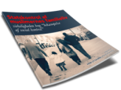
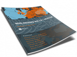

Statskontrol af muslimernes familieliv

Integrations- og socialminister, Manu Sareen, sprang ud som den helt
store frelser for de ”undertrykte” unge muslimer, da han skrev et
debatindlæg med titlen ”Vi skal gå i fælles kamp for Fatima”. Bedømt
på titlen lader det til, at ministeren ønsker at give et billede af
sig selv som prinsen på den hvide hest, som kommer for at befri de
stakkels unge muslimer, der er lænket af ”social kontrol”.
Muslimernes Rolle i Vesten

I forbindelse med konferencen ”Muslimernes rolle i vesten” i Bella
centret, har Hizb ut-Tahrir Skandinavien gennemført en effektiv og
massiv kampagne, hvor mere end 35.000 invitationer er blevet delt ud i
moskéer, gymnasier, universiteter såvel på gader og stræder.
Uddelingen har omfattet Sjælland, Fyn og Jylland. Desuden har Hizb
ut-Tahrir holdt en række offentlige møder hvor konferencens tema er
blevet præsenteret.